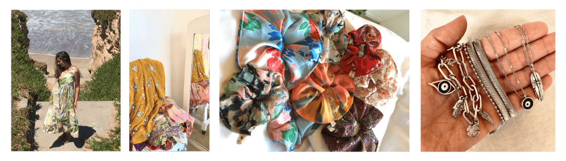
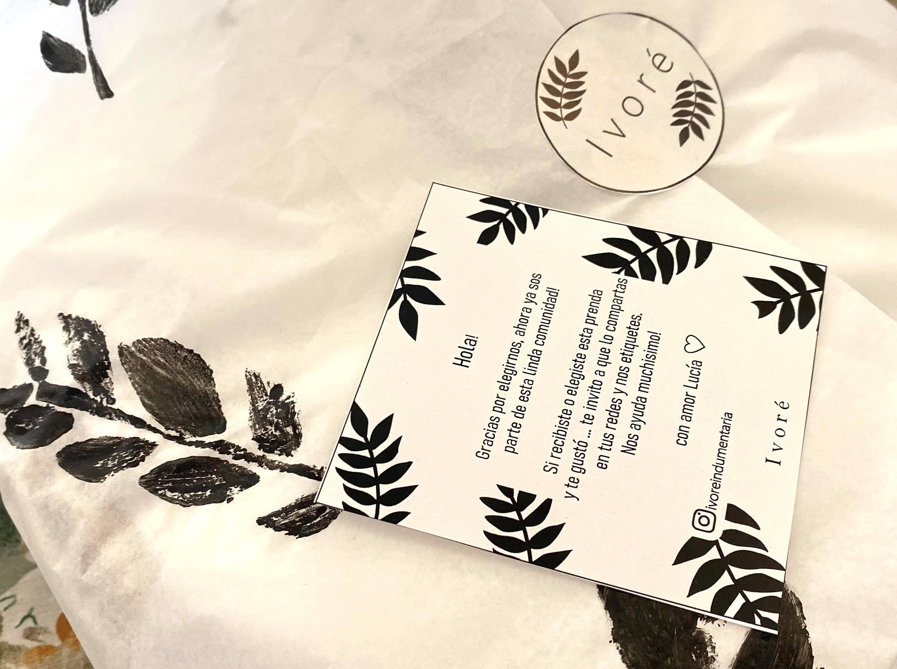

Sobre Ivoré
Ivoré es una marca de indumentaria y accesorios creada para mujeres que aman el color, las flores y la naturaleza. De estilo bohemio y romántico. Inspirada en viajes, personas y lugares alrededor del mundo.

En Ivoré se puede encontrar prendas clásicas y atemporales como también prendas con un estilo propio, las cápsulas de la marca aportan el sello de lo artesanal (se utilizan textiles intervenidos: bordados manuales, teñidos, sellos, tejidos, etc).
Además se caracteriza por ser amigable con el medio ambiente, su packaging es 100% reciclable y reutilizable.

Ivoré surge en Marcos Paz, ciudad ubicada a 50km de la capital federal, República Argentina. Nació en el año 2020 con el objetivo de brindar opciones básicas a la hora de vestir, que puedan salir de lo que se considera moda, que se pueda seguir usando en otras temporadas, y ofrecer lo que puede considerarse como "caballito de batalla" o sea, que tenga multiples ocasiones de usos.